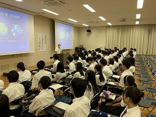
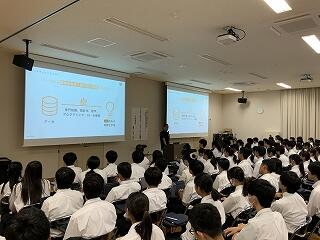
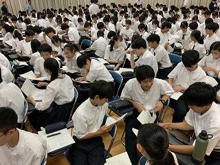
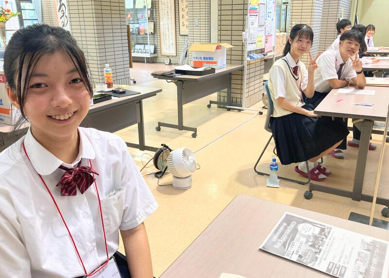

SAGANO BLOG
- >
- SAGANO BLOG
- >
- すべて(時系列)
2024年09月26日
９月26日(木)７限のＬＨＲの時間に研修旅行結団式を行いました。はじめに引率教員の紹介、続いて団長の村瀬副校長先生からの挨拶がありました。
研修旅行委員長の西川さんからは、皆でルールをしっかり守りつつ、楽しんで盛り上げていこうとのエールがありました。
その後、学年部長から挨拶があり、最後に研修旅行担当教員からの諸注意を行って締めくくりました。来週からの研修旅行に全員のベクトルを集結させて、この研修旅行が思い出に残るものとなるよう、健康と安全に十分に気を配りつつ準備を行っていきたいと思います。
なお、研修旅行当日から随時こちらのブログに研修旅行の様子をアップロードしていく予定です。
2024年09月25日
９月14日（土）～16日（月）、ジャパンフィールドリサーチ(JFR) in 熊本 を実施しました。
熊本県玉名郡和水町の「ゆるっと！ひふみ亭」を拠点とした森林環境調査活動に、校有林調査ラボとサイエンス部の生徒９名が参加しました。また、昨年度に引き続き、熊本県立鹿本高等学校・熊本県立第二高等学校の生徒・教職員の皆さんと共同での調査も行いました。
14日（土）は開会式のあと、前和水町教育長 岡本貞三 先生から、和水町の自然と歴史についての講話をいただきました。その後、ひふみ亭近隣の山林を歩き、翌日の調査地点の確認を行いました。

15日（日）は３校の生徒が研究テーマ毎にチームに分かれて調査活動に取り組みました。竹林・混交林・スギ林を対象地とし、東海大学農学部教授 井上弦 先生に指導助言を受けながら、調査を進めました。調査内容は、ドローンによる地形調査、土壌断面調査、土壌物理性調査、森の癒し～森林の吸音特性～、焼成用土試料採取です。


また、16日（月）は本校の生徒が補足調査を行い、３日間の活動の総括を行いました。
本校の参加生徒は、本取組の調査結果および分析結果をとりまとめ、11月に実施される「みやびサイエンスガーデン」や学術団体における発表を予定しています。
第二高校の皆さんは、壁画に取り組まれ、素晴らしい作品ができあがっていました。

調査の合間には、学校を越えて交流を深めていました。即興のピアノコンサートも。
「ひふみ亭」の皆さんには、今年も調査活動の安心安全確保の面からご協力をいただくとともに、おいしいお昼ご飯を用意していただきました。本当にありがとうございました。
2024年09月24日


本年度から新たに設立された探究委員会の１年生１～６組の生徒が、３年生の先輩にアカデミックラボの各ラボの魅力についてインタビューを行いました。各ラボを代表する３年生たちは、気さくに真摯に１年生の質問に答えてくれていました。後輩への思いやりと頼もしさを感じます。探究委員の１年生たちは、２学年上の先輩からもらった貴重なアドバイスを１年生全体に紹介する予定です。10月には次年度のアカデミックラボの選択が始まります。先輩からのアドバイスを参考に、自分の興味を広げ、前向きな選択につなげてほしいと思います。
2024年09月18日
9月11日(水)､2学年専修コースを対象に、「フラクタル幾何学入門～コンピュータを使った不思議な数学の世界」という題目で、京都工芸繊維大学教授の平田 博章先生にご講演をいただきました。
講演では、フラクタル図形とは何かやその応用例についてもお話しいただきました。映画やゲームなどのCGを作るために応用されてもいることを知り、生徒も興味が尽きない様子でした。さらに、講演終了後もフラクタル図形をテーマにラボ活動を行っている生徒が積極的に質問する姿も見られました。
実例をもとに、何かを学ぶことで物事の見方が変わり、それが新しい発見につながることや、ずっと気を張り詰めて勉強するだけではなく、学んだことを活かして遊んでみることも大事、というような言葉もいただき、生徒にとって良い刺激となりました。

生徒の感想を一部掲載します。
・数学に関する講演となると自分が理解できるか不安だったけれど、フラクタルは順を追っていけば理解しやすく、興味がもてた。また、実生活につながる部分も多くて数学だけれど数学に感じない面白い内容だった。自分も幾何学的な研究をしているので参考にしたいです。
・自分たちがよく見る自然的なものの画像や映像が全く関係なさそうなフラクタルと密接に関係していると知ってとても驚きました。今回のフラクタル以外にも言えることだと思いますが、関係ないと思っていたことが意外な形で関係することがあると思うので、様々なことを学ぼうと思うのと同時に、学んだことを多角的な観点から観察して利用できないか考えようと思いました。
・フラクタルについてすごく曖昧なイメージしか持てていなかったので、少しはっきりしたように思います。数式からあれほど綺麗な形が出てくるのは面白いと思いました。数学の美しさについてもっと知りたいと思いました。
・今回のフラクタル幾何学の内容は今回講演を知るまで全く知らなかったんですけど、今回の公演を通して、フラクタル幾何学について、話もすごいわかりやすかったし、すごい興味を持って聞くことができました。この世の中に潜んでいる複雑な図形をフラクタル図形によって表現できるところは特に強い印象を受けました。また、フラクタル図形は、ただの線分や図形がより美しい見た目に変わったり、その上、目で認識できるのに長さがどんどん無限大に発散して行ったりしているところも興味深い話でした。自分はこの先の進路で数学系を考えていたんですけど、今回のお話は、僕に数学により興味を持たせてくれました。講義ありがとうございました。
・学習はするだけではダメで，その知識をどう活かし，使うかが大切だと聞き，今後，学習するときに意識していきたいと思いました。自然界にあるものが数式から簡単なことを繰り返すだけで本物っぽく作ることができると知ってとても面白いと感じました。
2024年09月15日
９月11日（月）、１年生全員を対象にQO株式会社様より特別講義「プロから学ぶデータサイエンス講座」を実施していただきました。

データサイエンスがどのように社会で利用されているのか、マーケティングという面から説明していただきました。
データ分析のキモは「仮説」であり、問い・仮説を立ててから分析し、解釈するというステップについて教えていただきました。
これは生徒たちがこれから取り組む「探究」においても必要なステップです。
後半は実際のデータから戦略を考える演習に取り組みました。

グループワークは大いに盛り上がりました。
アンケート結果から〇〇の回答が多いから〇〇ではないか。
いや、〇〇の回答の方に目を向けると〇〇の方がよいのではないか。
と、数字の背景に何が隠れているのか深く考え、議論する様子が見られました。
代表で発表した生徒の意見は講師の方の想定を超えたもので、驚かれていました。
生徒たちは「数学が社会で役に立っていることがわかった。」、「今後の探究活動に生かしていきたい。」などと感想を述べていました。
QO株式会社の皆さん、ありがとうございました。
2024年09月15日
８月６日・７日に実施したサマーセミナー「東京・つくばサイエンスツアー」について報告します。
これは今年度初めての企画で、２年生10名を対象に実施しました。
まず、国立科学博物館へ行きました。

生徒たちは、動物の剥製コーナーの迫力に圧倒されたり、α 線や β 線の飛跡を白く浮かばせて可視化する霧箱の仕組みや美しさに感動したり、と見学時間が足りないほど、さまざまな展示を楽しみました。
続いて、東京大学先端科学技術研究センターを訪問し、極小デバイス理工学分野の岩本 敏 教授から特別講義をしていただきました。
講義のあとは実験室の見学をさせていただき、研究の様子を知ることができました。

「科学の未来は予測できない」という岩本教授の言葉が印象に残ったようです。
１日目の夜は、宿泊先のホテルで本校の卒業生から現在の研究・業務内容やこれまでのキャリアについて話していただきました。

１名は電気自動車のワイヤレス充電に関する研究について、もう１名は地震に関する調査活動について話してくれました。
両名とも興味関心のあることを現在の仕事にしており、生徒たちが今後のキャリアを考える上で参考になったと思います。
２日目は、つくば市に移動して、施設見学をしました。
地質標本館では、さまざまな鉱石が展示されています。
美しい形をした鉱石を見ていると、なぜこのような形になるのか、という疑問が自然と頭に浮かびます。
生徒たちは帰宅してからも、この２日間の色々な疑問を解決するため、インターネットで調べるなどしたようです。
サイエンススクエアつくばでは、最新の研究成果に触れることができました。

生徒たちに特に人気だったのは、人を癒すロボット「パロ」です。
最後に国土地理院の地図と測量の科学館を見学しました。
３Dメガネで地形を立体的に見ることができたり、伊能忠敬が作成した地図にはじまり現在の測量方法に関する解説まで歴史的な技術の進歩を感じることができたり、面白い展示がたくさんありました。
今回のサイエンスツアーを通して、生徒たちはあらためてサイエンスの面白さや主体的に学ぶ姿勢の大切さなどを感じたようです。
参加した生徒たちがこれを１つの契機として、大きく「飛翔」してくれることを楽しみにしています。
お話しいただいた大学の先生方、卒業生のお２人、見学施設でガイドをしてくださった方々、ありがとうございました。
2024年09月15日
文化祭が終わり、日常生活が戻ってきました。
軽音楽部は文化祭の２日間は毎年音楽室でライブを行います。
３年生はこのライブで引退となりました。
たくさんの方から応援していただいたバンド「ハロー二世帯住宅」の活動も終了です。
夏休み中は・・・
和歌山城大ホールで行われた「第１回近畿高等学校軽音楽フェスティバル2024」で観客を盛り上げ、奨励賞を受賞。

ひたちなか市文化会館大ホールで行われた「TEENS ROCK 2024 ～GP FINAL IN HITACHINAKA～」に出場。

全国大会という大きな舞台で演奏できたのは、貴重な経験でした。
後輩たちにとっても憧れの先輩となりました。
ここからは進路実現に向けてがんばって！
2024年09月14日

本日は嵯峨野高校の進学説明会でした。
そこで活躍するのが、広報委員さんたちです！
綺麗な校舎や設備はもちろんですが、嵯峨野の自慢はなんと言っても生徒たち。
.jpg)
今年のパンフレットも生徒デザインによるものですが、もちろん司会も生徒が務めます。
そこで驚いたのがこの写真。
彼女たちは自分の出番でないときも、来場者に目を配り、背もたれに背中をつけることはありませんでした。
これは...教員ながら頭が下がります。嵯峨野高校では生徒から教わることもたくさんあります。
大変よく頑張ってくれました。
見学会終了後、広報委員さんたちの頑張りを讃える校長先生。頬が緩んでいます。
中学生の皆さん！こんな先輩方と一緒に学校生活を過ごしてみませんか？
また嵯峨野高校で会おうね！！
2024年09月13日

９月に入り、芸術の秋のはずなのですが...
残暑厳しい中での制作が続きます。浴衣に少し色が入り、地元企業「和衣庵」の和裁士さんに襟の染め位置をチェックいただいているところです。柄の位置が合っているか、神妙な面持ちのデザイン工芸部の部長。


この作品は、京都府総合文化祭で10月末に展示される予定ですが、修学旅行や中間テストなど学校行事の関係で、9月中に完成させねばなりません。
...間に合うのでしょうか⁉
切羽詰まって制作してるのは、デザイン工芸部だけではありません。美術部さんも⁉


陶芸チームの作品は何とか割れずに素焼きができました。


次は本焼成です。窯から無事に出てこられますように...。祈るしかありません。
あらゆる意味でドキドキさせる、残暑よりも熱い生徒たちの芸術の秋。
ご一緒に見守っていただければ幸いです。
2024年09月11日


.png)


華道部です。
私たちは、小原流の先生にご指導いただいてお稽古しています。
２年生５名、１年生５名で、日々楽しく活動しています。
文化祭で、作品展示を行いました。
そして今年は、より多くの方に華道の魅力を知っていただくため、「生け花体験」を行いました。
基本の、たてるかたちです。
ご参加いただいた皆さんは、とても上手に生けておられました。
「お花を生けるのは初めですが、上手にできました」
「楽しかった」「癒やされました」
という声をいただきました。
見て楽しむだけでなく、花の美しさを引き出すことができる生け花を体験していただきました。
四季折々の草花を通じてその美しさをしることができる部活動です。
初心者大歓迎です！
2024年09月05日
文化祭もいよいよクライマックス。文化委員長が閉会の言葉を述べます。

多くの人に支えられながら、高校生という時間が一つずつ大切な思い出に変わっていきます。


とこのは祭の受賞に輝いたみなさん。おめでとうございます。


加えて、受賞の有無に関わらず、全ての嵯峨野生の健闘を讃えます。


思い通りにいかず、友達と揉めてしまったみなさん。
裏方に徹して行事を支えたみなさん。
クラスと両立して、クラブの出し物を頑張ったみなさん。


もし失敗したことがあったなら、それはあなたが何かに挑戦した証拠です。
その勇気と努力を讃えます。


最後に、この文化祭を全力で実行した生徒会のみなさん。貴方たちはカッコイイ！
行け！嵯峨野戦隊！生徒会レンジャー！体育祭まで突っ走れ！

2024年09月04日

嵯峨野高校の【とこのは祭】は吹奏楽部の演奏から始まります。


その後ろから現れた副会長の血沸き肉躍るような開催宣言。


続いて、校長先生降臨。徳の高さで後光が差す校長先生と、眩さで目がくらむ生徒のみなさん。
ここで校長先生、まさかの「とこのは祭」であいうえお作文を披露。


負けじと我らが生徒会長は突然の謎かけ。
会長「とこのは祭とかけまして～。美味しいお味噌汁とときます！！」
生徒「その心は～？」（全員で練習したかのように相槌を入れる生徒のみなさん）
会長「どちらも出汁（出し物）が気になるでしょう～！」（生徒歓声）
熟練した政治家のように、聴衆の心を掴む嵯峨野の生徒会長。...将来が楽しみです。
一方、舞台の幕の裏には...。黙々と司会、音響を担当する放送部のみなさん。
舞台の上だけでなく、裏方となって「とこのは祭」を支えるのも生徒たち。嵯峨野高校の自慢です。

自分の見つけた場所で、自分の思うとおりに、


輝け嵯峨野生！


クラスの黒板にみんなで描いたという3年生教室の黒板アート。

2024年08月29日
8月26日に教職員研修として、カードゲームを用いたシミュレーションでSDGsを体感するワークショップを実施しました。資格をもつ２人の教員が企画し、多くの教職員が参加しました。この日は、朝から会議や別の研修も実施されており、忙しい１日でしたが、交流や振り返りの時間は、この日一番の盛り上がりを見せるほどの熱気に包まれていました。
「世界はつながっている」そして「私も起点」であり、「誰一人残さない」というSDGsの理念を体感したこの研修を生かし、これからの嵯峨野高校の教育活動がSDGsの達成につながるよう、学校全体で取り組んでいきたいと思います。
2024年08月29日
8月22日に東京の国会議事堂参議院別館講堂にて開催された全国高校生政策甲子園決勝大会に、本校２年生４名の「Re:Approachers」が出場しました。うち３名は昨年度の第一回大会にも「Approachers」として出場しています。
提案した政策は、学校の放課後の時間に子ども、青年、高齢者の３世代が交流し、地域で子育てを行う社会を実現する未来をつかむ「Project "GRAB"」です。今年度は５チーム中４番目という発表順にも恵まれ、会場を巻き込む工夫を交えながら聴衆を惹きつける発表を行うことができました。今夏の都知事選で一躍時の人となった石丸伸二氏が有識者として参加されており、氏から質疑応答の時間に的確な指摘や具体例を交えたアドバイスをしていただけたおかげで、発表時間だけでは伝えきれなかった思いや政策の論拠をアピールすることができました。
.jpg)
.jpg)
その後の記念撮影や国会議事堂見学では、他校の参加生徒と打ち解ける様子も見られ、非常に充実した時間を過ごしました。
.jpg)
決勝大会の結果は、事前に提出した政策説明動画を視聴した方々の、インターネット投票に基づいて決定されます。この記事をご覧いただいた皆さまには、以下のリンクもしくはQRコードからLINEの友達登録の上、ぜひ、ご視聴と投票をよろしくお願いします。
https://line.me/R/ti/p/@705lepyr?oat_content=qr
.jpg)
2024年08月28日
8月27日に2学期の始業式・着任式を各HR教室への配信で行いました。
初めに着任式が行われ、新しくALTのウェスト・ブレンデン先生が着任されました。
次に2学期の始業式が行われました。
校長先生の式辞では、まず残暑や感染症拡大、台風接近について触れられ、安全に文化祭準備が進み、無事に本番が終えられるよう、一人一人が高い危機管理意識を持って行動するよう促されました。
また、夏休みは部活動や勉強、研修などを通して「ほんまもんの学び」と出会う絶好の機会であったこと、そして、夏休み中の「ほんもんの学び」に触れた経験を一過性のもので終わらせるのではなく、それを次のステップへとしっかりつなげる2学期として欲しいと述べられました。
「ほんまもんの学び」は学習だけでなく文化祭活動もその一つであり、良い作品を作り上げていく過程では色々な意見が出たり、考え方の違いがあったりしてなかなか思うように進まないこともあるはずだが、意見や考えが違ったときこそ発展・成長のチャンスだと考え、「対話」や「会話」を大切にし、「ほんまもんの学び」となる文化祭活動となることを願っていると述べられました。
その後、生徒指導部長からは、２学期のスタートにあたって、「時を守り、場を清め、礼を正す」の３つを改めて自分の言動を見つめ直すものさしにし、それでもうまくいかない時は周囲の人を信頼して欲しいとのお話や携帯電話のルール確認が行われ、きちんと規則を守って活動するよう促されました。また、限られた時間を有効活用し、今年の文化祭が素晴らしいものになるよう協力して、各クラスで準備を進めて欲しいと述べられました。
最後に伝達表彰がありました。


2024年08月27日
８月１日・２日、岐阜県高山市で行われた、第48回全国高等学校総合文化祭将棋部門兼第60回全国高等学校将棋選手権大会の結果報告です。
予選はスイス式トーナメント４回戦で行われ、３勝１敗で決勝トーナメント（15チーム）に進出しました。決勝トーナメント１戦目は兵庫県の白陵高校と対戦し、２勝１敗で勝利しました。２戦目は予選で敗北した神奈川県の横浜高校と再び対戦し、１勝２敗で惜しくも負けてしまいました。その結果、全国第５位として表彰していただきました。生徒たちはとても悔しそうでしたが、非常に立派な成績です。
対戦前の１コマ


11月には近畿高等学校総合文化祭も控えています。生徒たちは上位目指して頑張りたいと決意を新たにしていました。
2024年08月27日
ＬＬ教室前にソファーが並べられた国際交流コーナーがあるのをご存じですか？
新校舎の完成に合わせて整備されたものですが、30年近くが経過し、傷みが目立っていました。
そこで昨年度と今年度にかけてソファー座面の張替え修繕を行いました。
布から撥水加工の合皮に変え、色も元気の出るビタミンカラーに一新。
明るく楽しい雰囲気のコーナーになりました。
生徒の皆さんの憩いの場所になることを願っています。
2024年08月26日
2024年8月4日から9日まで、本校生徒が韓国全羅南道州の麗水市にある全羅南道州教育庁国際教育院に滞在し、日韓高校生グローバル公民権プロジェクトのサマーキャンプに参加しました。国際教育院は多文化教育に特化した教育施設であり、国内外から教員や児童生徒が集まり研修を行います。
このプロジェクトはオンラインで月に1回程度実施されており、サマーキャンプはそのプログラムの一環として対面で実施されたものです。参加したのは、全羅南道州にある高校の生徒、日本からは嵯峨野高校他3校の生徒総勢約40名でした。プログラムの内容はグローバル課題に関するもので、国際教育院所属の教員によって開発されており、生徒同士のやりとりも含めプログラムは全て英語で実施されました。また全生徒が国際教育院の寮に滞在し生活を共にしました。生徒は講座や寮での生活を通じて、英語でのコミュニケーションやグローバルリーダーとしての素養を育むことができました。12月には今回の研修に参加した韓国の生徒が嵯峨野高校を訪問する予定です。


以下では簡単に研修内容について紹介します。
8月4日 出国日
1時間程度のフライトの後、釜山空港に到着しました。そこからバスで2時間30分移動したところにある全羅南道国際教育院に向かいました。施設内には世界の衣食住の文化を紹介する多文化共生教育ならではのコーナーがありました。地元の食堂で夕食を済ませた後、寮に戻りました。
8月5日～8月9日 日韓高校生グローバル公民権プロジェクトサマーキャンプ
8月5日の午前中は開会式とアイスブレイクを行いました。その中で、生徒は研修を共にするグループとバディを決め、緊張した面持ちで自己紹介を行っていました。8月5日の午後以降はグローバルリーダーシップの育成を目指す様々な講座、文化施設や商業施設を訪れるフィールドワーク、生徒間の交流を深めるイベント等が実施されました。以下ではその中からいくつかをご紹介します。
Global Food Culture
この講座では、世界の食文化や我々が普段から慣れ親しんでいる食材のルーツについて学びました。その後、生徒には世界各国の食材を使用した新しい麺料理を考え、実際にそれを作るという課題が与えられました。どのような料理を作るかスムーズに決められないグループや、料理が決まっても調理過程で上手くコミュニケーションができず、作業が進まないグループもありました。しかし間違いを恐れず積極的に意見を伝えようとしたり、指示を出そうとしたりする姿を見せる生徒もいました。即興で料理を考えて、それを作ることは生徒にとって難しい課題でしたが、難しいからこそ生徒には積極的な意見交換や協働することが求められました。この講座では食文化だけでなく、異文化の人々との協働とその難しさについても学べたようでした。


フィールドワーク: 順天湾ガーデン
フィールドワークの1つとして順天湾ガーデンを訪れました。順天湾ガーデンは2023年に国際庭園博覧会が開催されており、博覧会以降も多くの観光客が訪れるスポットになっています。生徒はグループで世界各地の美しく整備された庭園、湖、丘、そして何千本もの花や木々を鑑賞していました。
Talent Show Prep & Talent Show
講座に加え、生徒間の交流と異文化理解を深める活動も実施されました。この活動では、10人程度のグループに分かれてＫポップダンスを一緒に練習し、その踊りを披露しました。韓国の生徒が提案してくれた曲の一つに日本のとても有名なアニメの主題歌がありました。韓国における日本のアニメ文化の認知度の高さを知る一場面でした。生徒は意思疎通が上手くできない時も、互いの国の文化をきっかけに話が盛り上がったり、関係性を深めたりしていました。研修を通じて、国を超えて人を繋ぐ文化の偉大さをどの生徒も身を持って理解できたと思います。


Closing & Farewell Ceremony
閉会式では、講師から一人ひとりに修了証書が渡されました。「この閉会式は関係性の終わりではなく、将来続いていく友情の始まりです。この機会に感謝し、関係性を続けていってください」との言葉があり、多くの生徒は大きく頷きながら聞いていました。また自ら手を挙げ、みんなの前で涙ながらに感謝を伝える生徒や感謝の思いを書いた手紙を渡す生徒の姿を見て、今回の研修が生徒にとって非常に有意義であったかが伝わってきました。


8月9日〜8月10日 フィールドワーク：釜山・帰国日
国際教育院での閉会式を終え、空港がある釜山に移動しました。釜山ではナマク高校の生徒と合流し、釜山の市場や観光スポットを案内してもらいました。のどかなリゾート地であるヨス市とは異なり、巨大なビルや商業施設が立ち並ぶ釜山を生徒たちは楽しんでいました。


最後に
研修が進むにつれて、生徒は英語だけでなく、現地の高校生から韓国語も積極的に学び、使おうとするようになりました。また帰国の際にも、「もっと英語・韓国語を学びたい」と話していました。湧きあがる感情や思いを、機械翻訳ではなく、自分の言葉で目の前の人に伝えたいと感じたのだと思います。これは対面での国際交流だからこその学びであり、現地に赴き、直接人と触れ合うことの尊さを実感したようでした。
このサマーキャンプを通して生徒たちは貴重な学びと成長の機会を得ることができました。参加した生徒たちがグローバルリーダーとして、社会で活躍してくれることを期待しています。様々なご支援・ご協力を本当にありがとうございました。
2024年08月22日
ジャパンフィールドリサーチ in 丹後 の最終日は，昨日の雨での調査中断を取り返すように，残された時間を有効に活用しました。

{kind=link}
{kind=link}
{kind=link}
{kind=link}
{kind=link}
{kind=link}
{kind=link}
{kind=link}
{kind=link}
{kind=link}
{kind=link}
{kind=link}
{kind=link}
{kind=link}
{kind=link}
{kind=link}
{kind=link}
{kind=link}
{kind=link}
{kind=link}
{kind=link}
{kind=link}
{kind=link}
{kind=link}
{kind=link}
{kind=link}
{kind=link}
{kind=link}
{kind=link}
{kind=link}
{kind=link}
{kind=link}
{kind=link}
{kind=link}
{kind=link}
{kind=link}
{kind=link}
{kind=link}
{kind=link}
{kind=link}
{kind=link}
３日間には、生徒たちは教員のアドバイスがほとんどなくても，キビキビと動けるようになり，「自分たちが何をしなければならないか」を理解し，互いに確認しながら調査を進めることができるようになりました。
{kind=link}
{kind=link}
そして何よりもフィールド調査の難しさや大変さとともに，楽しさを大いに実感してくれたのが３日間の最大の成果だと考えます。
この経験と得られた学びが，生徒たちの今後に活きることを願います。
{kind=link}
〒616-8226
京都市右京区常盤段ノ上町15番地
TEL 075-871-0723 FAX 075-871-0724
E-mail [email protected]
Copyright (C) 京都府立嵯峨野高等学校 All Rights Reserved.